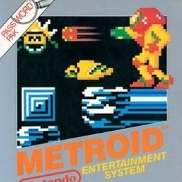

September 2023
一款以初代《银河战士》为基础制作的 2D 平台动作游戏，在还原经典探索与战斗体验的同时，加入了重力翻转玩法。
玩家可以在多个相互连接的房间中移动、跳跃和使用武器战斗，通过开启房门探索新的区域。不同房间拥有独立的场景边界和挑战内容，镜头会随玩家移动并在进入新房间时完成视角切换。
部分关卡允许玩家主动改变重力方向，在地面与天花板之间切换。玩家需要利用重力变化改变移动路线、躲避障碍并到达常规移动方式无法进入的位置。
下载游戏(Windows)
下载游戏(OSX)
